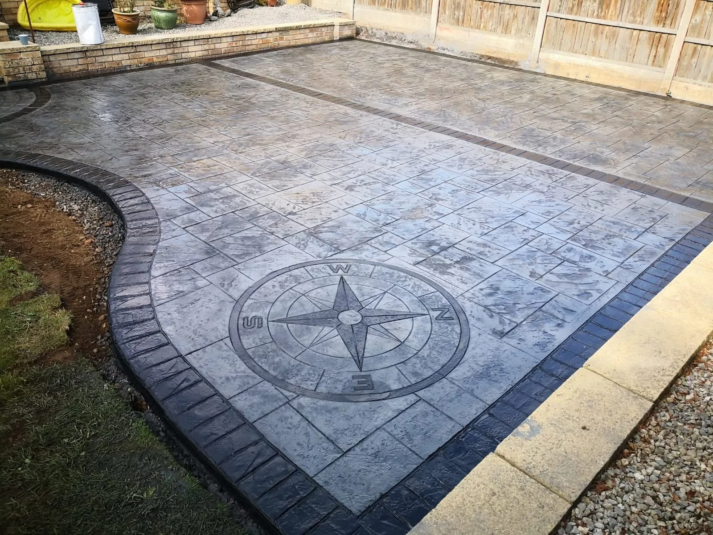
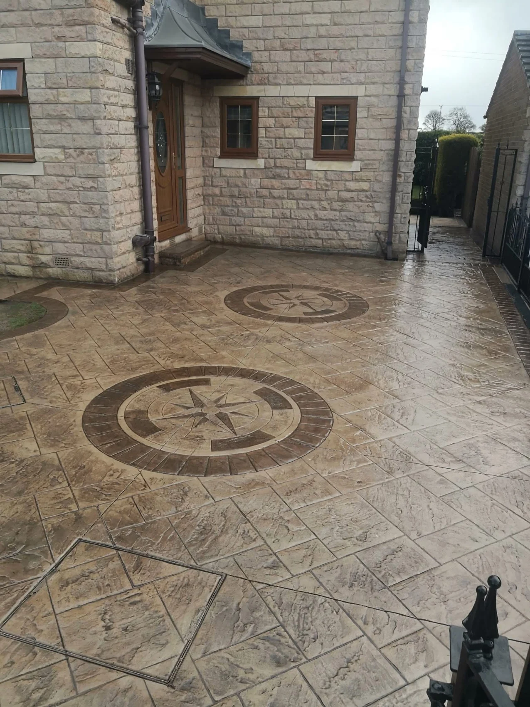

WARRIOR · DONCASTER
Strength in every detail.
Pride in every finish.
Premium driveways, patios and paving from Warrior. Based in Doncaster, built around your property.
CRAFTED WITH PRIDE
An entrance that
sets the standard.
Warrior Driveways & Patios creates driveways, patios and paving with attention to the details that make a property feel complete.
From a sweeping resin entrance to precise blockwork and decorative concrete, explore real project photographs and talk to us about the finish you have in mind.
Discover the projects →
DETAILS MAKE THE DIFFERENCE
More character.
From the ground up.
Compass details, textured surfaces and clean contrasting edges. A considered finish gives your outdoor space its own identity.
Explore patterned concrete →

OUR PROJECTS
Real homes. Lasting impressions.
Explore our driveway, courtyard and paving work.
THE WORK, IN MOTION
Look beyond the photograph.
Two on-site videos from Warrior Driveways & Patios.
PLANNING YOUR PROJECT
A few useful answers.
Where are you based?
Warrior Driveways & Patios is based at Unit 9 Armstrong House, Doncaster, DN9 3GA. Send your postcode to check availability for your location.
Which surface should I choose?
Tell us how you use the area, the look you prefer and your approximate budget. We can discuss resin, block paving, tarmac and patterned concrete for your project.
Can I send photographs?
Yes. Use the enquiry form to prepare a WhatsApp draft, then attach your photographs before sending it.
What should I ask about the warranty?
Ask us to explain the applicable warranty, its duration and coverage for your particular installation before agreeing to the work.
REQUEST A QUOTE
Let’s talk about your outdoor space.
Tell us what you have in mind. This form opens a WhatsApp draft with all your details, ready for you to review, add photos and send.